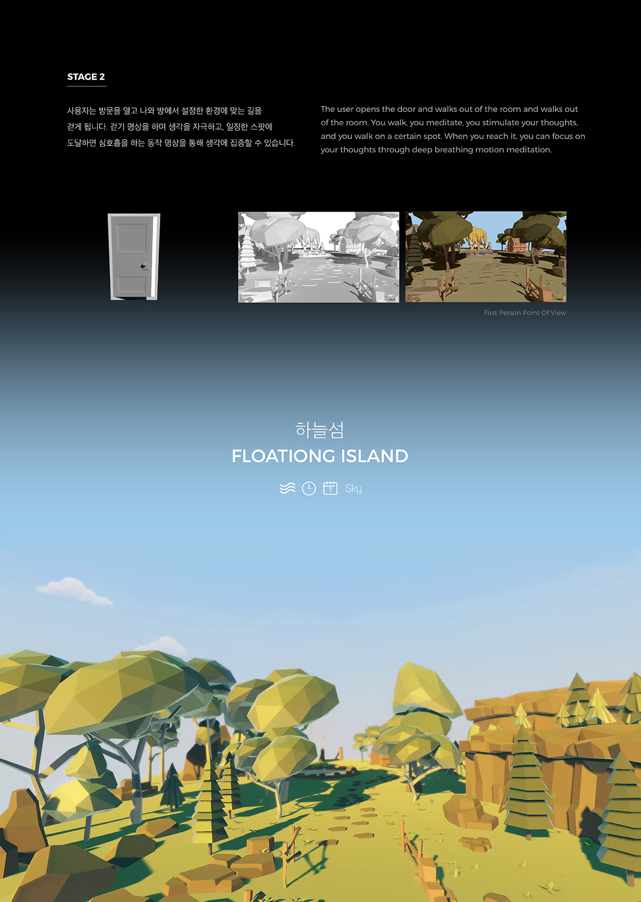
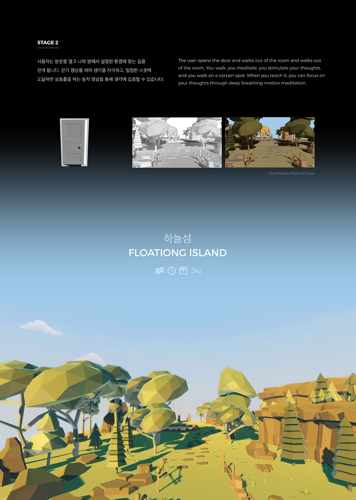

EGO
김수진
Mindfulness MR Contents ‘EGO’
EGO는 나를 뜻하는 그리스어 Εγώ에서 온 단어입니다. EGO는 산책을 할 때 마주치는 감각적 요소들을 MR 컨텐츠를 통해 경험하게 해줍니다. 일상의 불안에서 벗어나 잠시 멈추고, 자신을 느껴보세요.
Mindfulness MR Contents ‘EGO’
EGO is a word from the Greek word Εγώ that means me. EGO lets you experience the sensory elements you encounter while taking a walk through MR contents. Free from the worries of daily life, pause for a moment, and feel yourself.